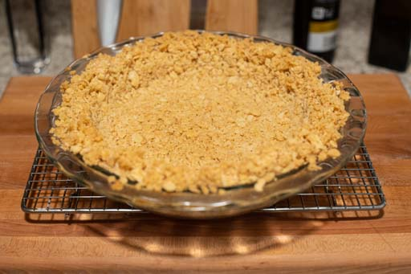
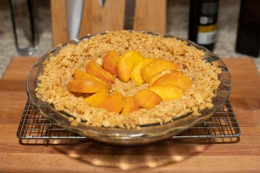
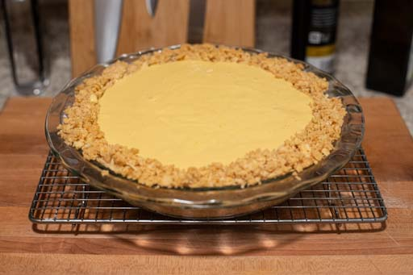

The essence of a beach pie is its salty, slightly crunchy crust. Bring butter to room temperature and preheat oven to 350°F. Crush two sleeves of saltine crackers with a rolling pin or mortar and pestle. The consistency should be small pieces, perhaps the size of rice grains or orzo, not homogenous fine powder. Mix in turbinado sugar. Incorporate butter by hand until no clumps of butter remain and the mixture adheres almost like a dough. Press mixture into a 9-inch diameter glass pie plate using the bottom of a measuring cup. The bottom of the crust should be the same thickness as an ordinary pastry or graham-cracker crust (about 3/16 of an inch), but the walls may be much thicker. Blind bake the crust for 25 to 30 minutes, until it develops some color. Cool on a wire rack.
Begin by peeling the peaches. Your peaches should be soft to the touch but not mushy. If they can be peeled easily with a peeler, they aren't ripe yet. When they are ready, cut a shallow X though the skin at the bottom of each peach, and then immerse it in boiling water for about 20 seconds. Immediately transfer it to cold water, and when it has cooled, it should be possible to remove the skin by hand, starting from the X. Cut each peach into at least 8 slices.
This pie can be made with any combination of citrus juices, so long as the total quantity is about 1.5 cups. I recommend including at least oranges, lemons, and limes in your mixture. Regardless, zest all of your citrus and set the zest aside. Next, juice the citrus and strain the juice to remove the pulp. Again, the total quantity should be 1.5 cups. Combine juice with sugar, and bring to a low boil. Stir continuously until the volume of liquid is reduced to 1 cup. This may take 20 minutes or more, and the heat may need to be increased to keep the liquid at a simmer. Transfer the resulting syrupy liquid to the refrigerator or freezer to cool.
Combine four egg yolks with 2 tbsp of citrus zest. Do not reserve egg whites. Egg whites have no place in this recipe. Pour egg whites down the drain. Attach a whisk to a powered mixer and at the fastest setting, whip eggs until fluffy and several times their original volume. This should take about five minutes. Slowly stream in condensed milk while continuing to whisk at high power, until combined. Reduce speed to minimum and mix in citrus syrup from earlier until just combined. The syrup does not need to be room temperature, but should not be hot enough to prematurely cook the eggs.
Shingle sliced peaches radially over pie crust in a single layer. The crust need not be fully cooled. Pour filling over crust. Bake at 350°F for 18 minutes, at which point the center should be almost but not quite set. Cool completely on a wire rack, and then chill in the refrigerator for four hours or overnight.
|  |  |  |
The tanginess and saltiness of this pie are balanced by cool and refreshing fresh whipped cream on top. Some say that it can be served with meringue instead of whipped cream, but this is heresy. In a freezing-cold bowl, combine vanilla, sugar, and cream, and whisk at maximum speed until the whipped cream reaches your desired consistency. Spread over pie. Finish by sprinkling fleur de sel and a generous amount of citrus zest.
Instead of squeezing mixed citrus, remove the skin from two large Dekopons (AKA Sumo Citruses) and use a blender to liquify the slices. The result should be rather pulpy. Juice one lemon and add dekopon puree until the total volume is 1.5 cups, then add sugar and reduce to 1 cup total volume as in the original recipe, stirring constantly to ensure the pulp does not stick to the pan. Instead of lining the crust with peach slices, cream 8oz of Neufchâtel cheese with 3 tbsp of turbinado sugar and 1 tbsp of vanilla extract. Place tablespoon-sized dallops of sweetened cheese into the shell, being sure to leave a little space between them so that the filling can run through. Cover the cheese with the liquid pie filling, and bake as above.
Roxy's Grapefruit Beach Pie: make the sumo creamsicle beach pie as directed, but replace the blended dekopons with fresh-squeezed grapefruit juice.
Ali Alesia & Alphonso Beach Pie: a sweeter, low-effort variation. Thaw a 10oz bag of frozen dark sweet cherries to room temperature. Make the pie shell as directed, and spread the cherries over the shell in a single layer. Pour any any juice produced by thawing over them. Make the filling as directed, but replace the reduced citrus juice with 1 cup of canned alphonso mango pulp (accept no substitutes for alphonso), plus the juice of one lemon. Do not reduce the pulp and lemon juice, or add extra sugar.